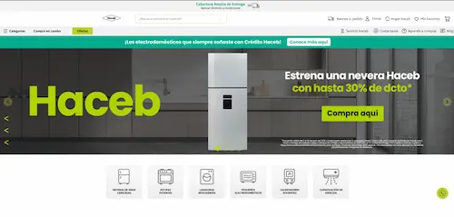
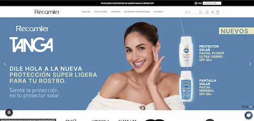
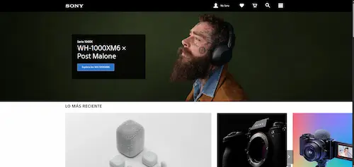
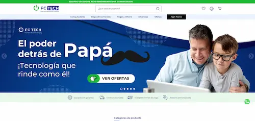
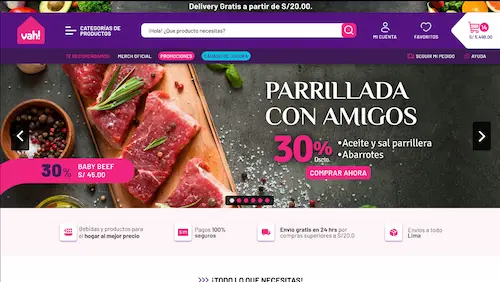
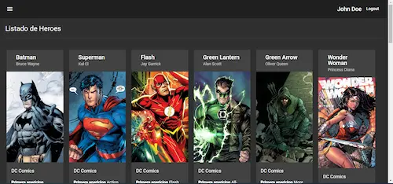

Haceb
Desarrollo y evolución de componentes en VTEX IO para home, PLP y PDP, optimizando render, estructura y experiencia mobile-first en producción.
Ver tienda →Desarrollo experiencias e-commerce escalables y de alto rendimiento, enfocadas en conversión, performance y consistencia visual en producción.
Trabajo seleccionado
Proyectos en los que he participado desarrollando soluciones e-commerce reales, desde la implementación de interfaces hasta la optimización de componentes en producción.

Desarrollo y evolución de componentes en VTEX IO para home, PLP y PDP, optimizando render, estructura y experiencia mobile-first en producción.
Ver tienda →
Migración de VTEX Legacy a IO, desarrollando componentes clave del storefront y asegurando consistencia visual y funcional en múltiples vistas.
Ver tienda →
Implementación de landings, ajustes visuales y soporte frontend para experiencias comerciales en diferentes regiones.
Ver tienda →
Implementación de funcionalidades en PLP, PDP y checkout, incluyendo componentes dinámicos y mejoras en experiencia de compra.
Ver tienda →
Desarrollo completo de secciones storefront: home, PLPs, PDPs, header, footer, landings y vitrinas para retail.
Solicitar contexto →
Proyecto de práctica con manejo de rutas, persistencia en LocalStorage, protección de vistas y operaciones CRUD.
Ver repo →Experiencia en producción
Experiencia trabajando sobre múltiples tiendas VTEX en LATAM, realizando soporte, debugging y evolución continua en entornos productivos.
Soporte en producción, debugging de componentes y ajustes en experiencia de usuario.
Ver tienda →Mantenimiento de storefront y ajustes visuales en componentes VTEX IO.
Ver tienda →Validación de flujo de compra y resolución de incidencias en producción.
Ver tienda →Soporte en home, vitrinas y ajustes de catálogo.
Ver tienda →Soporte en experiencia storefront y mantenimiento de funcionalidades.
Ver tienda →Soporte en tienda LATAM, ajustes y validaciones en producción.
Ver tienda →Experiencia
Desarrollo interfaces, componentes y experiencias de compra para marcas LATAM sobre VTEX IO, React y ecosistemas e-commerce en producción.
Testimonios
Comentarios de profesionales con los que he colaborado en proyectos de desarrollo, diseño, calidad y operación e-commerce.
Profesional dedicado, proactivo y propositivo frente a los desafíos. Se comunica muy bien con clientes, entiende requerimientos y trabaja para entregar a tiempo con calidad.
Demostró responsabilidad, compromiso y disposición para aprender, con sólido manejo de React, JavaScript, TypeScript, CSS y Git, además de una actitud colaborativa.
Trabaja con perseverancia hasta encontrar soluciones, mantiene una actitud positiva y colabora de cerca con diseño para lograr mejores resultados.
Profesional responsable y dedicado; fue un apoyo importante para entregar un producto de calidad y aportar valor dentro de proyectos ágiles.
Su curiosidad, perseverancia y búsqueda de nuevas soluciones lo hacen destacar. Investiga tecnologías y perfecciona su trabajo con atención al detalle.
Stack